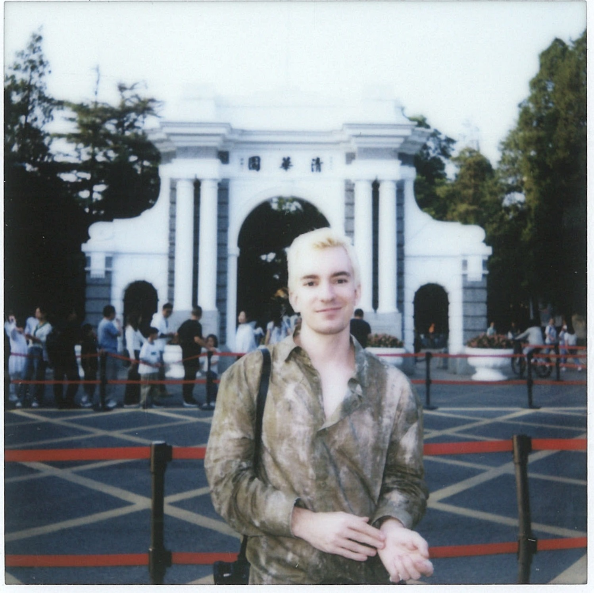

André Graubner
I use large-scale computation to fight disease.
As Principal ML Engineer at Topos Bio, I build foundation models to discover small molecules targeting highly flexible proteins.
Led Topos-1, our all-atom generative model for intrinsically disordered proteins. It shows significant improvements in experimental agreement over models like AlphaFold at a fraction of the cost of traditional molecular dynamics.

At Nvidia, I significantly improved the calibration of the Fourcastnet neural weather model, closing the gap to the 'gold-standard' IFS forecasting system. Pictures of my work were featured in a blog post by Nvidia CEO Jensen Huang and the GTC November 2021 Keynote.

I built the largest expert-labeled dataset for extreme weather events and the fastest AI-driven detector, then built one 100× larger with the European Space Agency.